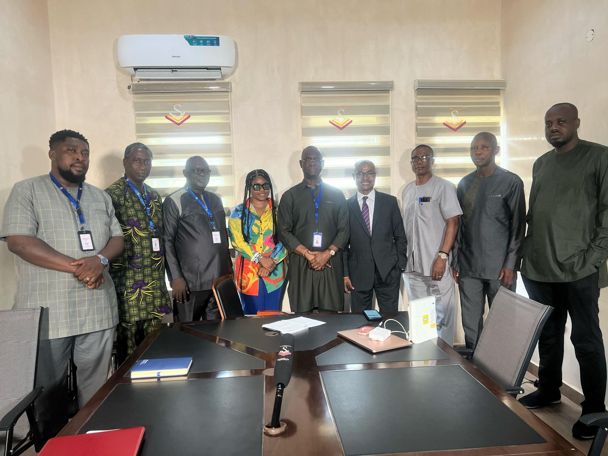

Local Journalism Project (LPJ)
Local stories deserve the resources to become trusted public knowledge.
The Local Journalism Project supports deeper, fact-based reporting and gives future media professionals a place to learn by doing.

Why it matters
When local news disappears, communities lose a shared record of what is happening around them. The project responds by strengthening the people, tools, and partnerships needed for local reporting to thrive.
Our focus is practical: support news production, connect emerging journalists with experienced mentors, and make space for research that serves communities in Nigeria and beyond.
What the project enables
Help expand the local news ecosystem.
MEDIA is looking for journalists, editors, multimedia producers, educators, and partners who want to strengthen community-focused reporting in Nigeria.
Join the projectBe part of the change
Empower media literacy. Defend press freedom. Support ethical journalism — as a volunteer, donor, or advocate.